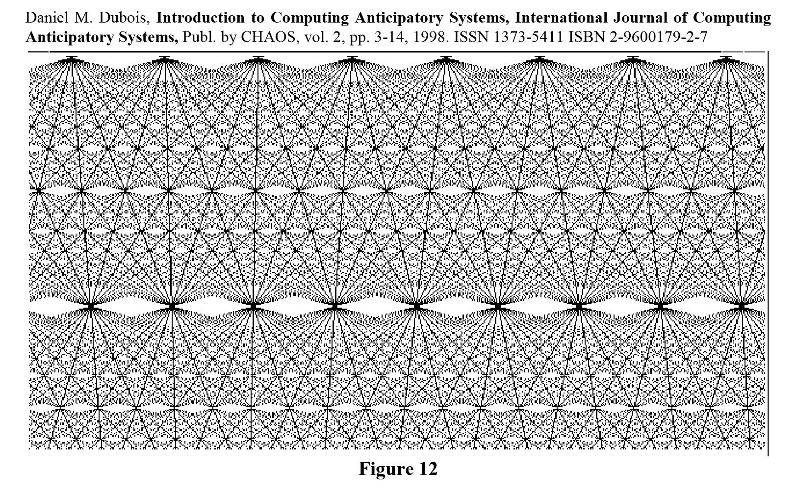

Interdisciplinarity¶
48. What are you studying?¶
KEY QUESTIONS
Where is the boundary between the subject you are studying and other subjects?
Are subjects in university real things - do they actually exist in the jobs people do in the world?
If all the theory you are taught was actually true, how different would the world look to the way it actually does?
WHY DOES THIS MATTER?
Each of you is a student studying a subject in the ‘School of economics and management’. What is ‘economics’? What is ‘management’? There are no clear answers to these questions. All that can be said is that they are ‘topics of discussion’. So is that all a ‘subject’ is?… a topic of discussion?
But how much discussion about your subject do you really do in university? In University, subjects are divided into ‘topics’, and assessments are set around those topics. All of a sudden, you are not able to ask what the big ‘subject’ is, because you have small tasks to complete otherwise you will fail your course! And asking too many difficult questions can get very disruptive!
And we are all told that we study the subjects we do because it will help us get jobs. Does it really? Where in the real world is there a ‘topic’ of ‘economics’? Of course, people buy and sell things, create businesses, and so on. But nobody fully understands this basic human behaviour.
49. The Discipline of Education¶
KEY QUESTIONS
Why is education often boring?
Is education a subject?
What is education for?
Do you need to come to university when you can learn so much online?
WHY DOES THIS MATTER?
There is much confusion about what education is and there is no coherent theory of it.
Education may be often boring because we have a bad theory of education. If we had a better theory, then learning would perhaps be more in tune with the way that human consciousness works.
Boredom itself is a reaction to a kind of oppression.
The topic of education itself is not of the same kind as the topics of physics, maths or chemistry. Sociologist Everett Hughes argued that education was not a discipline but rather “a major complex of arts”. He explains that it is not a discipline:
“in the sense of offering a single order of phenomena which, when observed and/or manipulated in a systematic way, yield a body of consistent theory. In this respect, education is like the other great practical arts - looking after the sick, keeping order, and distributing justice. All of them, however, give rise to a variety of disciplines and, in turn, use many of their results. These arts are the very springs of human curiosity; they are also great consumers of man’s best intellectual and scientific efforts. None of these arts, moreover, is ever completely under the control of the human will, the will of one man or of some small group of men, or even of society at large through its instruments. Yet control over these arts is sought in all societies. The manner of practicing them is the very stuff of the clash of wills and interests; thus, the stuff of politics.”[@hughes_sociological_1985]
Hughes’s distinction between a ‘discipline’ and a ‘complex of arts’ is helpful in the sense that it causes us to ask whether there is a ‘body of consistent theory’ about education
In education, what is accepted as ‘theory’ is often an amalgamation of ideas drawn from different sources and used in a rhetorical way to defend particular interventions or practices.
50. Distinctions¶
KEY QUESTIONS
What is a distinction?
How is one distinction related to another?
WHY DOES THIS MATTER?
Drawing a distinction between one thing and another is always the first (and essential) step in being able to study something. Distinctions are made about biological species, artistic forms, philosophical positions, times of day, colours, or sounds and movements. Education feeds on distinctions. To study education is to study the way distinctions are made and the dynamics of their interaction.
A distinction is a boundary. It constrains one set of things as belonging to one group, and another set of things as belonging to a different group. In making a distinction about red butterflies, a line is drawn and criteria established to identify whether a particular object belongs on the side of the line which says ‘red butterflies’ and everything else not a red butterfly. The red butterfly distinction is marked by constraining what does not meet the criteria (other distinctions) for a red butterfly. A distinction is a choice of a constraint. The choosing, however, is itself constrained by other things: for example, norms, values, institutions, education and individual expectations.
Every distinction exists within distinctions at a different level. We might make the distinction about butterflies, but where are the distinctions made about the scientific or aesthetic norms, values and expectations within which the butterfly distinction is made? To explore distinction-making as a process, we have to become aware of both sides of the distinction in order to see the complex structures of hierarchies which might be at work in establishing even the simplest judgements about reality.
In education we draw a distinction much like the distinction which Hughes tries to draw. If we want to say education is \(x\), \(y\) or \(z\), then a distinction is drawn with \(x\), \(y\) or \(z\) in a box, and everything that isn’t \(x\) outside the \(x\) box Then we can say that everything outside \(x\) constrains the definition of \(x\). Distinctions become drawable.
In a simple way, Hughes distinction between Education as a complex of arts and what he calls ‘disciplines’ can be drawn as in Figure [fig:educationconstraint]{reference-type=”ref” reference=”fig:educationconstraint”}.
{#fig:educationconstraint width=”columnwidth”}
Drawing it like this immediately raises questions. The arrows between the disciplines in the diagram show a relationship which is not clear in Hughes’s description. Maths and Physics have a relation to education. Education shapes what they are: so shouldn’t they be within the education box? But also Maths and physics have a relationship to each other: mathematical techniques like calculus derived from new theories in physics and astronomical observations. So this diagram isn’t very satisfactory - but the lack of clarity in Hughes’s description becomes apparent through trying to draw it as a diagram.
51. Transduction: The process of upholding a distinction¶
KEY QUESTIONS:
What is the process that converts an analogue signal to digital?
What is the process that maintains a boundary between something?
If a boundary between one thing and another changes, what happens to other boundaries?
How does society change over time?
WHY DOES THIS MATTER?
If there are many possible distinctions about ‘maths’, ‘education’, ‘hospitals’ or ‘chairs’ how it is that we maintain relatively stable distinctions in society? There must be a process which is responsible for maintaining a coherent and agreed set of distinctions around which we coordinate our social lives, our education system, our scientific practice, and so on. Cybernetics gives a name name to the process of maintaining a distinction: it is transduction.
In engineering, transduction is the process of taking one form of energy and turning it into another - like an electric transformer or a heat exchanger. In those examples, and in every other example of transduction, what results is a boundary - or a distinction.
The transduction process works on both sides of a distinction. By recognising that distinctions are maintained by a process is to recognise that the process may change - and a change to the distinction-making process at one level can lead to changes in the distinction-making process at many other levels too. To change a social system - or indeed any system - we have to ‘tweak the transducers’!
All distinctions are the result of transduction processes.
Societies change when their distinctions about themselves change, and this changes when the structure of their transductions change.
52. Inside and Outside in economics¶
KEY QUESTIONS
What are the internal economic considerations that businesses must consider?
What are the external considerations that businesses must consider?
WHY DOES THIS MATTER?
Strengthening the economic potential of the enterprise is impossible without improving the planning process, reflecting the process of implementation of innovations. These are internal processes.
The role of the target quantitative criterion in this case can be performed by an indicator of investment activity (the result of cash flow). It is also important to balance the amounts of positive and negative cash flows, analyze the relationship between the cash flow balance of current operations and net profit (loss).
The dynamics of changes in profit should correspond to the change in the balanced cash flows from the current activity. To maximize profits, it is necessary to minimize material costs and ensure the growth of labor productivity by reducing the labor intensity of products and works based on innovations.
The financial strategy of the company should be developed taking into account the risk of non-payments, inflation spikes and other force majeure circumstances.
Financial control is necessary for the timely identification of internal reserves, improving the profitability of the economy, increasing cash savings in the enterprise. Many of these require a consideration of external factors.
The use of an integrated automated management system for the formation of financial statements at the enterprise will allow processing the information base and regularly receive an operative report on its financial status of the company, will become a tool for diagnosis and continuous monitoring of the financial situation.
The use of modern information technologies will ensure the accuracy and coherence of actions of all employees, including those involved in the management process, the strengthening of internal financial control in the enterprise, the aggregation of information based on the processing of indicators of different levels of planning.
As a result, adequate and timely risk assessment will be possible, minimization of costs and effective operation of the enterprise in order to strengthen its economic potential in the face of uncertain market conditions.
53. Inside and Outside in Tourism¶
KEY QUESTIONS
What might ‘inside’ and ‘outside’ refer to in tourism?
what is the function of a tourism company in maintaining the relations between the ‘inside’ and ‘outside’ among its customers and suppliers?
What is leisure or recreation?
WHY DOES THIS MATTER?
Tourism intertwines culture, economics, ecology and management
Tourist resources are divided into cultural, natural, socio-cultural sites. It should be noted that it was cultural factors /culture that acted and acted as a driver of tourism development.
In the era of globalization, tourism acts as a link in the intercultural development and mutual understanding between peoples.
Tourism as a sphere of recreation is in interrelation with the environment. Recreational areas are very fragile, vulnerable, resources are exhausted.
Sometimes spontaneous, uncontrolled development of tourism creates a number of environmental problems: the destruction of natural landscapes, the modification of components of the natural environment, etc.
Accordingly, the formation of environmental awareness among tourism professionals, the understanding of related scientific branches necessary.
As a sphere of the economy, tourism is an active source of replenishment of the revenue side of budgets of different levels, has a multiplying effect on related industries.
In the tourist professional activity the leading role is occupied by management. Management in the field of tourism has a specific nature, because a tourist product is, first of all, a service product that requires a system approach to management, which is oriented to the development of the human resource of the enterprise and is “sharpened” for the interests of the client.
54. Meta-Language¶
KEY QUESTIONS
When do you talk about the way you talk?
Why might it be useful to have an agreed way of talking about talking?
How is a language about systems useful?
WHY DOES THIS MATTER?
What has been described as a process of upholding sets of distinctions has a more formal description in cybernetics developed by Stafford Beer.
Beer understood that the fundamental problems of institutions concerned how they made distinctions about themselves: the Viable System Model presented a kind of template upon which institutions and businesses could project their current operations and speculate on new ways of organising themselves.
Beer worked in Chile in 1971, to work with Salvadore Allende on the establishment of a technologically-driven socialist state.
The distinction between an organism and its environment is maintained through a process of attenuation of the environment by the organism, and the amplification of organism’s attenuations through the production of multiple descriptions of it. Any organism must somehow coordinate which parts of its operations to attenuate the environment. This means that as part of the organism there must be a higher-level function which examines the function of the organism’s operations and attempts to coordinate them.
55. Organism and Environment¶
KEY QUESTIONS
What is the relationship between an organism and its environment?
How does an organism adapt to survive in its environment?
WHY DOES THIS MATTER?
{#ref:basictransduction
width=”columnwidth”}
Organisms are complex systems, but their environment is more complex. Their complexity can be considered as variety and represented as \(V_O\), while the complexity of the environment is \(V_E\)
To survive in an environment, the organism has first to attenuate the complexity of the environment, and amplify its own complexity.
However, if the organism simply reacted to the environment, it would not be able to develop. It also needs a meta-system which is able to steer the adaptations of the organism by observing how the organism adapts.
56. Recursion¶
KEY QUESTIONS
Why do patterns contain patterns which contain patterns?
WHY DOES THIS MATTER?
{#recursive width=”columnwidth”}
Each level of transduction produces an attenuation of the level below it. Each level of transduction presents multiple descriptions of itself to the level above. The central issue here is that the attenuations are by necessity always approximations.
Each level engages directly with the level below by presenting multiple descriptions of the attenuation that it produces. This process of producing multiple descriptions of attenuation might be thought of as ‘amplification’.
The result of the combined process of amplification and attenuation is that there is error between the multiple descriptions of the world as it is and the attenuated descriptions of it. The central issue is what to do about the error.
Errors are manifested in the multiplicity of descriptions that each level presents to the level above. These multiple descriptions are similarly attenuated and amplified, and similarly produce error at the next level. And so it goes on.
57. Amplification and Attenuation in Organisational Structure¶
KEY QUESTIONS
Why are hierarchies a bad idea in an uncertain environment?
WHY DOES THIS MATTER?
All hierarchies work on the principle of attenuation: attenuation from the environment to the system, and attenuation from bottom to top.
The boss cannot absorb information about the detail about what is happening in the environment or on the ground: they have to work with an abstract representation of reality.
In a highly uncertain and complex environment, this means that a hierarchy is not able to absorb the complexity of its environment or its operation, and so its self-adaptation does not work effectively. Instead, the instinct of hierarchies is to defend themselves by becoming more authoritarian.
{width=”columnwidth”}
There exist approaches to organisation which avoid the problems of hierarchy. Whilst attenuation is necessary for any system to manage any other system of greater complexity than itself, recursive distinction-making can create a dynamically adaptive system whose operations in its environment are continually adapted according to the difference between the attenuations and the actual behaviour of the environment.
Whilst recursion is the key to effective adaptive behaviour and each level of transduction has the same structure as every other, each level of recursion attenuates and amplifies different differences. Because of this, recursive transduction structures lead to what can be identified as differences in function at different levels of recursion.
This second point is important when considering educational institutions. The environment of teachers is different from the environment of learners, or the environment of the institution’s accountants, or its managers. Each functional unit makes different attenuations and amplifications based on the information presented to it by lower levels, and presents different information to high levels of transduction.
{width=”columnwidth”}
58. Anticipatory Systems¶
KEY QUESTIONS
What is anticipation?
How does a system construct a model of itself?
How is anticipation connected to consciousness?
WHY DOES THIS MATTER?
Living systems anticipate changes in their environment. If they did not do this, they would be unable to react to threats.
Biologists including Robert Rosen [@rosen_anticipatory_2012] and mathematicians including Daniel Dubois [@dubois_computing_1998] have studied the phenomena which described a complex dynamic system whereby what is anticipated depends on a simultaneous processing of:
what has happened in the past
a model of what is happening
speculation on possible models of what might be happening, and what might be possible.
Dubois has elaborated this process using three simple equations equations showing how the dynamic interaction between what he calls a ‘recursive’ equation \((1)\), an ‘incursive’ equation \((2)\) and a ‘hyperincursive’ equation \((3)\) produces an interference pattern which displays self-similarity at recursive levels [@dubois_computing_1998]. 
Consciousness may operate according to these principles making us ‘reflexive systems’. Such a system as a ‘conscious’ system would continually and simultaneously be processing what is happening around us (1), thinking about why what is happening is happening (2), and considering and evaluating alternative explanations for why things are happening, and what might happen next (3).
59. Fractals and Symmetry¶
KEY QUESTIONS
What is the connection between living processes and mathematical processes which produce patterns that look like living things?
Is nature mathematical?
Is nature symmetrical?
WHY DOES THIS MATTER?
A fractal is a pattern which displays similarity in its structure at different levels. Common fractals include the Mandelbrot set and the Julia set.
Fractals look like living systems, and many living systems like fir cones, fern leaves, and sea shells display fractal patterns.
Danield Dubois’s mathematics of anticipatory systems produce self-similar structures which also look like fractals
The common factor between these different patterns is a symmetry at different levels. Equally, symmetry, or rather broken symmetry underpins current theories of the emergence of structure in the universe
In physics, the structure of matter at the most basic level is suggested as being the result of a symmetry-breaking process
There appears to be a connection between symmetry-breaking of physics and the symmetry breaking of biology has been made by both biologists, physicists and mathematicians.
Some, including David Bohm and Karl Pribram [@bohm_wholeness_2002] have even suggested that symmetry-breaking processes are the common link that connected physics to biology to consciousness
60. Creativity in Education¶
KEY QUESTIONS
What are the advantages of the developed creative thinking?
WHY DOES THIS MATTER?
Creativity:
changes attitudes towards life
allows you to give up passive attitude towards it
enables you to become the force that causes change and shapes your future
provides quick thinking and flexibility of thinking;
promotes the breadth of thinking, knowledge, applied methods, because at the decision of various problems you do not focus only on one moment and a way of the decision;
reduces the time and material costs necessary to solve the problem; allows you to know the harmony in yourself and in the world around you;
enriches the inner and outer world of man;
teaches to be in the present and simultaneously know and feel the past and the future; provides internal growth;
fills life with joy, meaning, purpose; makes life bright, creative;
creativity can not be insipid, indifferent, nihilistic;
helps to be more calm and persistent in solving problems;
increases your confidence in the correctness of your ideas;
helps to better understand the thoughts of other people and, therefore, it is better to navigate in the world of people;
helps to distract from stereotypes in thinking;
increases the pleasure that you receive from solving problems, the so-called “creative satisfaction”.
61. Systems and Complexity¶
KEY QUESTIONS:
How do different subjects relate to one another?
What is complexity?
What is simplicity?
WHY DOES THIS MATTER?
At this point we must be clear about how a ‘system’ is to be defined. Our first impulse is to point at the pendulum and to say, the system is that thing there. This method, however, has a fundamental disadvantage: every material object contains no less than an infinity of variables and therefore of possible systems. The real pendulum, for instance, has not only length and position; it has also mass, temperature, electric conductivity, crystalline structure, chemical impurities, some radioactivity, velocity, reflecting power, tensile strength, a surface film of moisture, bacterial contamination, an optical absorption, elasticity, shape, specific gravity and so on and on. Any suggestion that we should study ‘all’ the facts is unrealistic, and actually the attempt is never made. What is necessary is that we should pick out and study the facts that are relevant to some main interest that is already given … The system now means, not a thing, but a list of variables. [@ashby_introduction_1956]
The word ‘complex’, as it may be applied to systems, has many possible meanings, and I must first make my use of it clear. There is no obvious or preeminent meaning, for although all would agree that the brain is complex and a bicycle simple, one has also to remember that to a butcher the brain of a sheep is simple while a bicycle, if studied exhaustively (as the only clue to a crime) may present a very great quantity of significant detail. Without further justification, I shall follow, in this paper, an interpretation of ‘complexity’ that I have used and found suitable for about ten years. I shall measure the degree of ‘complexity’ by the quantity of information required to describe the vital system. To the neurophysiologist the brain, as a feltwork of fibers and a soup of enzymes, is certainly complex; and equally the transmission of a detailed description of it would require much time. To a butcher the brain is simple, for he has to distinguish it from only about thirty other ‘meats’, so not more than log2 30, i.e., about five bits, are involved. This method admittedly makes a system’s complexity purely relative to a given observer; it rejects the attempt to measure an absolute, or intrinsic, complexity; but this acceptance of complexity as something in the eye of the beholder is, in my opinion, the only workable way of measuring complexity. (Ashby, 1973 - “Some peculiarities of Complex Systems”, Cybernetic Medicine, Vol 9, no. 1)
62. Control¶
KEY QUESTIONS
Is control a good thing or a bad thing?
How do we know the difference between something being under control and something being out of control?
How might something out-of-control be brought under control?
WHY DOES THIS MATTER?
Cybernetics was originally defined as ‘the art and science of control in man and machine’[@wiener_cybernetics:_2013]. We have however, spoken of conversation being a dance, and that the dance can either flow, or it can break down - sometimes necessitating the teacher to recalibrate their approach. This issue of dancing and conversation is precisely the same as the issue of control. Unfortunately however, the word ‘control’ has some unpleasant associations with coercion, a loss of free will, authoritarianism, and so on. Yet all of those cases are characterised by a lack of control. So we require a more precise definition of control.
Stafford Beer explains the cybernetic sense of control like this: “Control is an attribute of a system. This word is not used in the way in which either an office manager or a gambler might use it; it is used as a name for connectiveness.”[@beer_cybernetics_1965]
Control can be thought of in the context of two people dancing. Control simply refers to the manifest connection between dancers whose moves complement each other, and who participate in a whole system which exhibits coherence in its behaviour. Control is evident in two people having a conversation in which they are both deeply committed and involved. It is also evident in a game of football between two teams, or between two people playing a game of chess.
Cybernetics was originally developed in the 1940s as an approach to studying the dynamics of mechanical control systems. Norbert Wiener’s mechanical control problem was how to shoot incoming aircraft. The mechanical problem involved feedback: the incoming object’s position and trajectory would change, and as it did, so the calibration of the counter-measures had to be adjusted. The incoming aircraft and the missile targetting system engaged in a dance.
63. Science and Life¶
KEY QUESTIONS
How can science understand life?
How can art help us understand life?
What is science not good at describing?
WHY DOES THIS MATTER?
All processes occur over time. Whilst the world continually moves forward, clocks continue to tick, the second law of thermodynamics gradually sees the increase in disorder in the universe, life creates new order.
Biological processes work against the second law of thermodynamics, creating order in plants and animals, where metabolism produces order through consuming food, and thought produces increase order in our brains. Schroedinger argued that this was a fundamental principle of life processes: they work against increasing disorder (or entropy). Life is about *neg-*entropy:
The essential thing in metabolism is that the organism succeeds in freeing itself from all the entropy it cannot help producing while alive. [@schrodinger_what_2012]
The unfolding experience of time-based arts like music provides a good example of the dynamic tension between entropy and negentropy, and has many similarities to the experience of learning. Cinema, music and theatre are forms of expression which display two interacting dimensions which are also common to all learning processes. There is a dimension of structure of things which occur at any moment, and there is a dimension of things which unfold over time.
Science and art look at the world in different ways. Both information (neg-entropy) and time are fundamental problems in science, which necessitate the descriptions of artists in order to deepen understanding
What is the difference between the way the scientist looks at nature and the way the artist looks at nature?
What is the value in having multiple rich descriptions of something?
What is the risk of only having scientific descriptions of something?